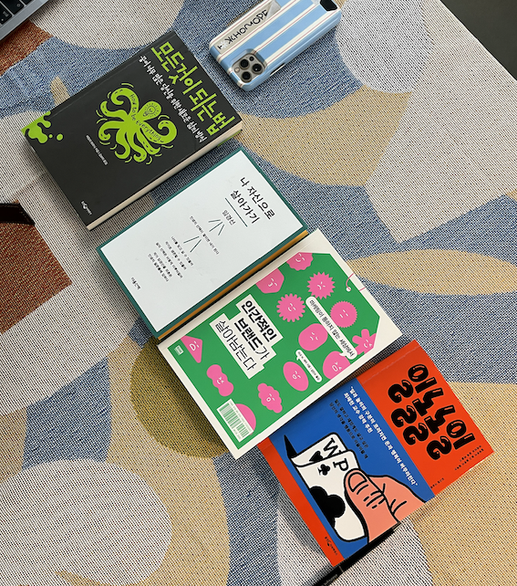
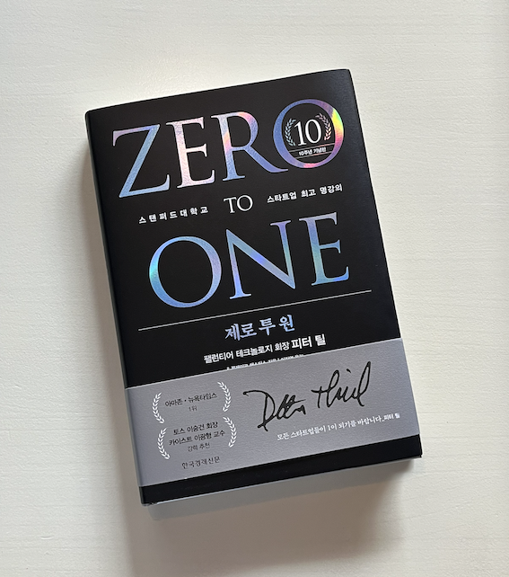

o f f l i n e
hello - now building in the offline world, an online website documenting what happens in the physical world. iykyk
일놀놀일, 이승희 김규림, 위즈덤하우스
나 자신으로 살아가기, 임경선, 마음산책
모든 것이 되는 법, 에밀리 와프닉, 웅진지식하우스
새는 날아가면서 뒤돌아보지 않는다, 류시화, 더숲

these are what I'm reading these days
그리스인 조르바, 니코스 카잔차키스, 열린책들, 토요일
아무튼 식물, 임이랑, 코난북스, 다음주 월요일
제로 투 원, 피터 틸, 한국경제신문, no deadline
마케터의 팔리는 글쓰기, 정민호, sbi, none

building all these @
and.dm.her
candy